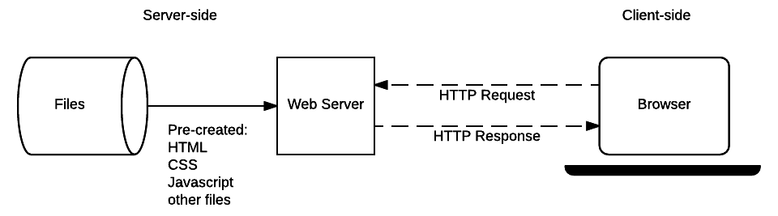

Protocolo HTTP
| Identificação | - |
|---|---|
| Aluno | Nicolas Chagas Souza |
| Matrícula | 200042327 |
| Disciplina | Fundamentos de Redes de Computadores |
| Turma | 01 |
Referencial Teórico
O protocolo HTTP encontra-se na camada de aplicação dos modelos TCP/IP e OSI.

Arquitetura Cliente-Servidor
Cliente
- Dispositivo ou aplicativo que solicita serviços ou recursos.
- Geralmente um navegador web, mas pode ser qualquer aplicativo que faça requisições a servidores.
Servidor
- Dispositivo ou programa que fornece serviços ou recursos em resposta às solicitações do cliente.
- Pode hospedar sites, aplicativos, ou dados.
Comunicação

Requisição (Request)
- O cliente envia uma requisição ao servidor para obter informações ou realizar uma ação.
- Utiliza o protocolo HTTP para estruturar e enviar a requisição.
Resposta (Response)
- O servidor processa a requisição e envia uma resposta de volta ao cliente.
- A resposta contém os dados solicitados ou informações sobre a execução da ação.

O Protocolo HTTP
- Desenvolvido por Tim Berners-Lee entre 1989 e 1991, no CERN (Organização Europeia para a Pesquisa Nuclear), o HTTP é o protocolo subjacente à World Wide Web.
- Concluído até o final de 1990, marcando o início oficial da World Wide Web em agosto de 1991.
- Define as regras para a comunicação entre cliente e servidor na web.
-
Permite a transferência de documentos hipertexto, como páginas web.
-
Requisições e respostas HTTP têm um formato específico com cabeçalhos e, opcionalmente, um corpo com dados.

- Cada requisição é independente das anteriores, sem armazenamento de estado entre transações (stateless).
- Define diferentes métodos, como
GETpara obter dados,POSTpara enviar dados ao servidor, etc.

- A versão do HTTP, o código de status e a frase de motivo acompanham as respostas na linha de status.
- Códigos de status (números de 3 dígitos) acompanhados de frases de motivo resumem o significado do código.
- Descrições fornecidas na primeira linha da resposta, conhecida como linha de status.
Versões do Protocolo HTTP
A primeira versão do HTTP (0.9) permitia apenas que fossem recebidas informações de um servidor apenas com a operação GET, e a troca de informações era permitida apenas no formato ASCII.
HTTP/1.1
A versão 1.1 do protocolo foi lançada em 1997, e adicionou à versão anterior (1.0) diversas extensões, dentre as quais destacam-se, conforme apontado em Baeldung [5]:
- Cabeçalho Host:
- No HTTP 1.0, não era oficialmente exigido, mas no HTTP 1.1, sua inclusão é requerida pela especificação.
- Importante para rotear mensagens por servidores proxy, permitindo distinguir domínios que compartilham o mesmo IP.
- Conexões Persistentes:
- No HTTP 1.0, cada par de requisição/resposta requer a abertura de uma nova conexão.
- No HTTP 1.1, é possível executar várias requisições usando uma única conexão.
- Status de Continue:
- Introduzido para evitar que servidores recusem requisições inviáveis.
- Os clientes podem enviar apenas os cabeçalhos da requisição primeiro e verificar se recebem um código de status de Continue (100).
- Novos Métodos:
- Além dos métodos já disponíveis no HTTP 1.0, a versão 1.1 adicionou seis métodos extras: PUT, PATCH, DELETE, CONNECT, TRACE e OPTIONS.
- Outras Melhorias Introduzidas na Versão 1.1 do HTTP:
- Compressão e Descompressão.
- Suporte a Vários Idiomas.
- Transferências de Intervalo de Bytes.
HTTP/2
A versão 2 do protocolo foi lançada em 2015, e teve como principal foco a melhora no desempenho do protocolo, principalmente por torná-lo um protocolo binário, no qual os dados trafegam na forma binária para diminuir o overhead. As principais alterações, conforme apontado em Baeldung [5], foram:
- Multiplexação de Requisições:
-
O HTTP 1.1 é um protocolo sequencial, permitindo enviar apenas uma requisição por vez, já no HTTP 2.0, é possível enviar requisições e receber respostas de forma assíncrona, permitindo várias requisições simultâneas usando uma única conexão.
-
Priorização de Requisições:
-
No HTTP 2.0, é possível atribuir uma priorização numérica a um conjunto de requisições, o que permite explicitar a ordem desejada para as respostas, como obter o CSS de uma página da web antes de seus arquivos JS.
-
Compressão Automática:
-
Ao contrário do HTTP 1.1, onde a compressão de requisições e respostas deve ser explicitamente solicitada, o HTTP 2.0 realiza automaticamente a compressão com GZip.
-
Reset de Conexão:
-
Permite fechar uma conexão entre servidor e cliente por algum motivo, abrindo imediatamente uma nova.
-
Server Push:
- Introduz uma funcionalidade para evitar que o servidor receba muitas requisições, de forma que o servidor tenta prever os recursos que serão solicitados em breve e proativamente envia esses recursos para o cache do cliente.
HTTP/3
Ao contrário das versões anteriores, que eram documentos do IETF (Internet Engineering Task Force) conhecidos como RFC (Request For Comments), o HTTP 3.0 é um Internet-Draft. O primeiro rascunho foi publicado em 2020. As inovações fornecidas nessa última alteração visam aumentar a segurança por meio de criptografia, como o fato de o HTTP 3.0 sempre criar conexões criptografadas, o que se assemelha à prática de sempre usar HTTPS na atual versão HTTP 2.0.
O principal diferencial entre HTTP 2.0 e HTTP 3.0 reside no protocolo de transporte utilizado, o HTTP 2.0 emprega conexões TCP, com ou sem TLS (para HTTPS e HTTP) enquanto o HTTP 3.0, por sua vez, é projetado sobre o protocolo QUIC (Quick UDP Internet Connections) - um protocolo de camada de transporte com multiplexação nativa e criptografia integrada, ele oferece um processo de handshake rápido e é capaz de mitigar problemas de latência em conexões com perda de pacotes e baixa velocidade. A utilização do QUIC traz benefícios potenciais, como uma rápida negociação de conexão e eficiência na mitigação de latência em conexões problemáticas.
Prática
O experimento será realizado com dois containers docker, sendo uma imagem de nginx usada para o lado servidor e uma de linux (debian) para o lado cliente.
Configuração do Ambiente
Orquestração dos serviços
Configurações do servidor (Nginx)
| nginx.Dockerfile | |
|---|---|
Configurações do cliente (debian)
O seguinte script será executado no início do container, para realizar as conexões ao servidor utilizando as versões especificadas do protocolo HTTP.
Execução
Para executar o experimento, basta executar o comando a seguir na pasta onde encontram-se os arquivos de configuração:
Para verificar os resultados do experimento, verifique os logs do container do cliente, rodando o comando:
Resultados
HTTP/1.1
Testando HTTP/1.1 com o comando curl (curl --include --http1.1 -X GET http://nginx):
Resultado:
HTTP/1.1 200 OK
Server: nginx/1.25.3
Date: Mon, 20 Nov 2023 15:50:37 GMT
Content-Type: text/plain
Content-Length: 56
Connection: keep-alive
Hello World! Esse conteúdo foi requisitado via HTTP/1.1
HTTP/2
Testando HTTP/2 com o comando curl (curl --include --http2 -X GET --insecure https://nginx):
Resultado:
HTTP/2 200
server: nginx/1.25.3
date: Mon, 20 Nov 2023 15:50:37 GMT
content-type: text/plain
content-length: 54
Hello World! Esse conteúdo foi requisitado via HTTP/2
HTTP/3
Testando HTTP/3 com o comando curl (curl --include --http3 -X GET --insecure <https://nginx>):
Resultado:
curl: option --http3: the installed libcurl version doesn't support this
curl: try 'curl --help' for more information
Houve um erro, pois a versão utilizada do curl não tem suporte à http3.
Considerações Finais
A seguinte tabela destaca algumas das principais diferenças entre as versões HTTP/1.1, HTTP/2.0 e HTTP/3.0 em relação a diversos aspectos, desde o ano de lançamento até características específicas de cada protocolo.
| Característica | HTTP/1.1 | HTTP/2.0 | HTTP/3.0 |
|---|---|---|---|
| Ano de Lançamento | 1997 | 2015 | 2020 |
| Tipo de Documento | RFC (Request For Comments) | RFC | Internet-Draft |
| Protocolo de Transporte | TCP (com ou sem TLS para HTTPS) | TCP (com ou sem TLS para HTTPS) | QUIC |
| Multiplexação de Requisições | Não suporta; sequencial | Sim; assíncrono | Sim; assíncrono |
| Priorização de Requisições | Não suporta | Sim | Sim |
| Compressão Automática | Não | Sim | Sim |
| Conexões Persistentes | Possíveis, mas com limitações | Sim | Sim |
| Segurança da Conexão | Requer explicitamente (HTTP) ou por padrão (HTTPS) | Requer explicitamente (HTTP) ou por padrão (HTTPS) | Sempre criptografada |
| Protocolo Binário | Não | Sim | Sim |
| Multiplexação de Streams | Não aplicável | Sim | Sim |
| Criação de Conexões | Sem funcionalidade específica | Requer handshake | Rápida negociação de conexão (QUIC) |
| Server Push | Não suporta | Sim | Sim (através do QUIC) |
| Projeto de Tim Berners-Lee | Não previu inicialmente como um meio somente leitura | Estendido para permitir autoria (WebDAV) | Projeto inicial incluía autoria (WebDAV) |
| Principais Objetivos Iniciais | Transferência de documentos hipertexto | Melhorias de desempenho e otimização | Aprimoramentos de desempenho e segurança (QUIC) |
A execução do laboratório mostrou as possibilidades de utilizar diferentes versões do protocolo HTTP entre cliente e servidor, mas não foi possível testar a versão HTTP/3.
Referências
[1] FreeCodeCamp. An Introduction to HTTP: Understanding the Open Systems Interconnection Model. Disponível em: https://www.freecodecamp.org/news/an-introduction-to-http-understanding-the-open-systems-interconnection-model-9dd06233d30e/. Acesso em: 20/11/2023.
[2] Mozilla Developer Network (MDN). Client-Server Overview. Disponível em: https://developer.mozilla.org/en-US/docs/Learn/Server-side/First_steps/Client-Server_overview. Acesso em: 20/11/2023.
[3] TANENBAUM, Andrew S.; WETHERALL, David J. Computer Networks. 5th ed. [Local de Publicação]: Editora, Ano.
[4] Mozilla Developer Network (MDN). HTTP Basics: Evolution of HTTP. Disponível em: https://developer.mozilla.org/en-US/docs/Web/HTTP/Basics_of_HTTP/Evolution_of_HTTP. Acesso em: 20/11/2023.
[5] Baeldung. HTTP Versions. Disponível em: https://www.baeldung.com/cs/http-versions. Acesso em: 20/11/2023.
[6] World Wide Web Consortium (W3C). History of the World Wide Web. Disponível em: https://www.w3.org/Protocols/History.html. Acesso em: 20/11/2023.
[7] IBM. CICS Transaction Server for z/OS. Disponível em: https://www.ibm.com/docs/en/cics-ts/5.3?topic=concepts-http-protocol. Acesso em: 20/11/2023.
[8] TCP/IP Guide. HTTP Overview, History, Versions, and Standards. Disponível em: http://www.tcpipguide.com/free/t_HTTPOverviewHistoryVersionsandStandards.htm. Acesso em: 20/11/2023.
[9] NGINX. HTTP Keepalive Connections and Web Performance. Disponível em: https://www.nginx.com/resources/wiki/start/topics/examples/full/. Acesso em: 20/11/2023.